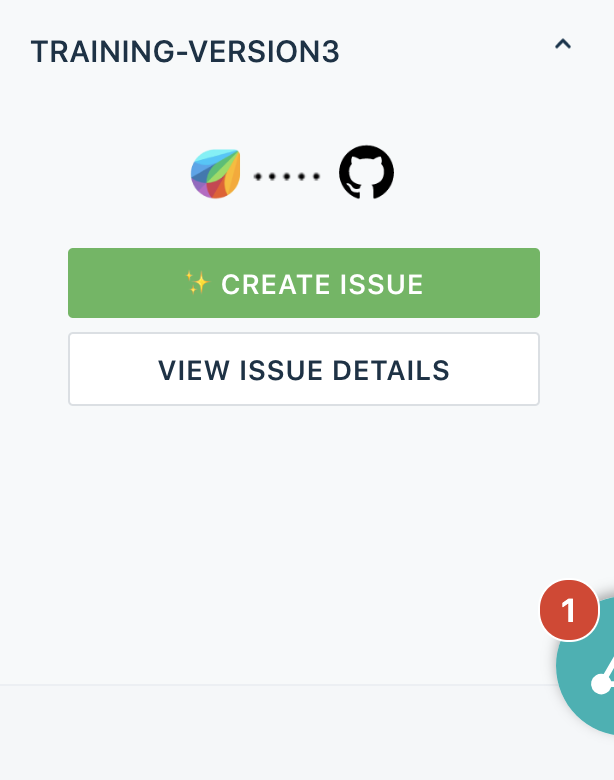
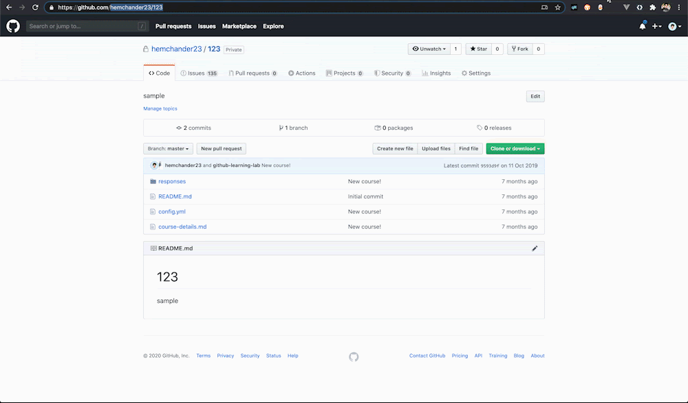
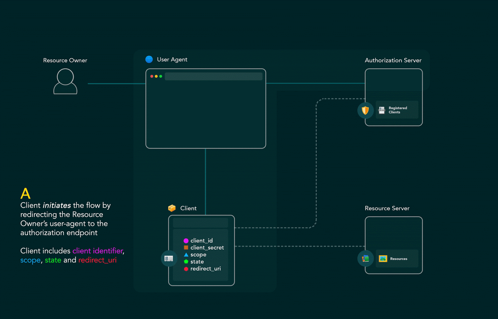
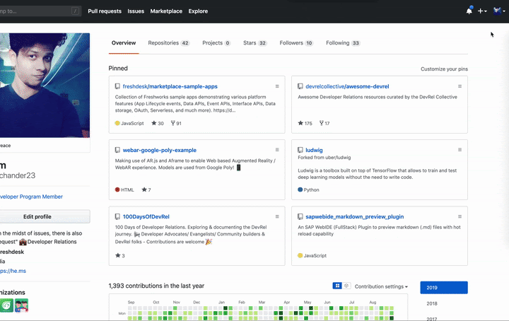
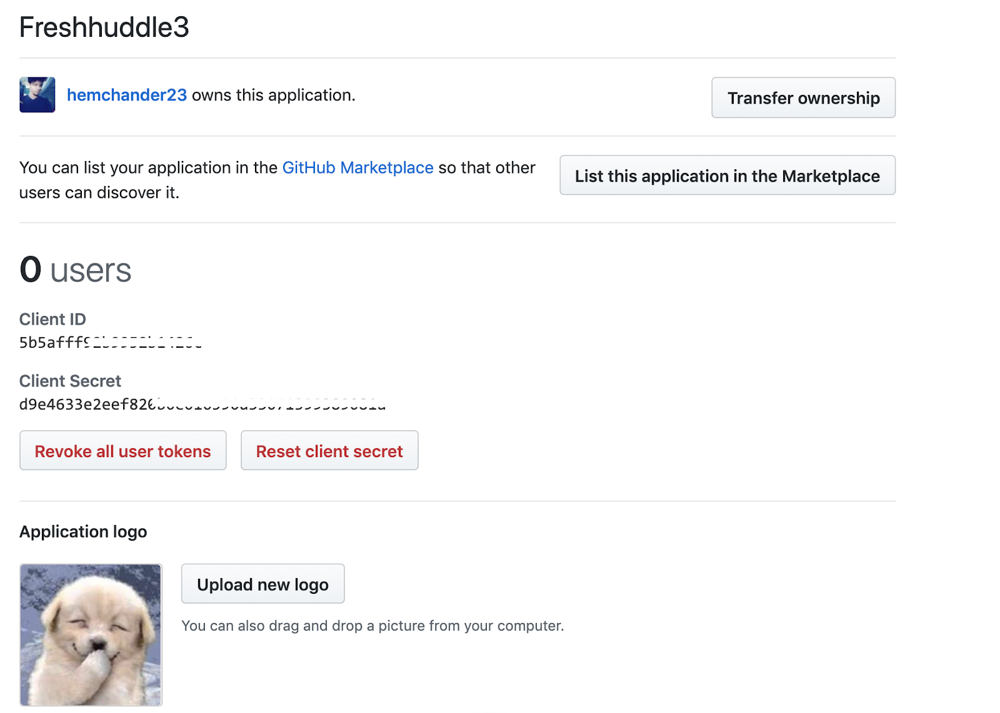
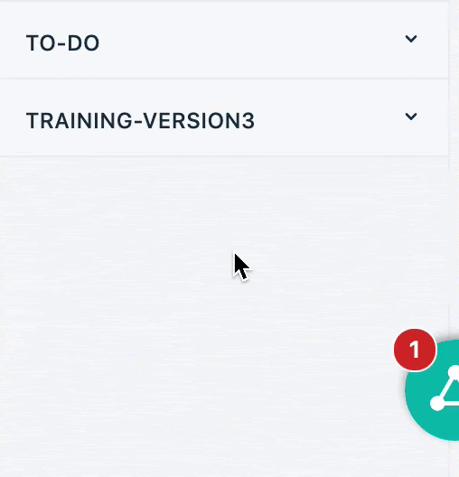
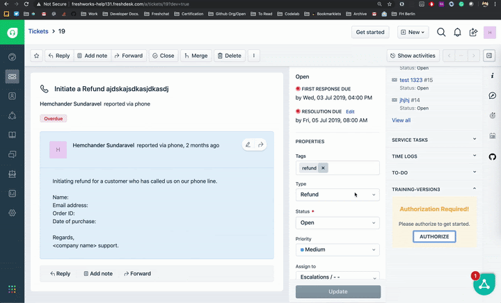
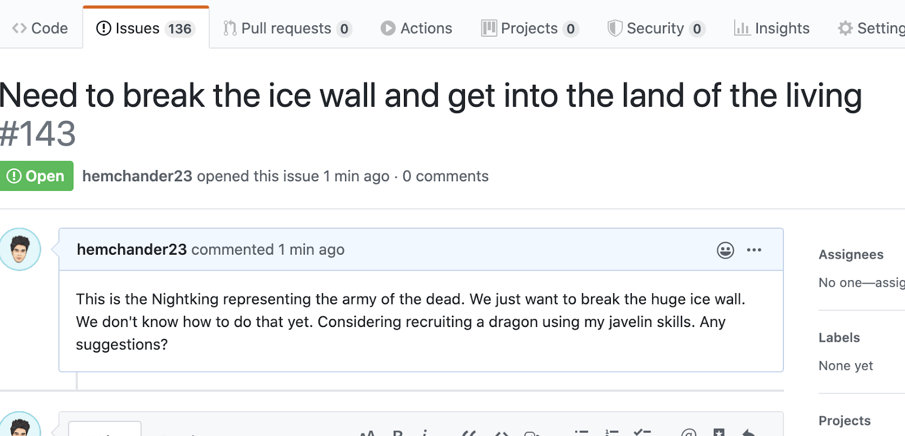
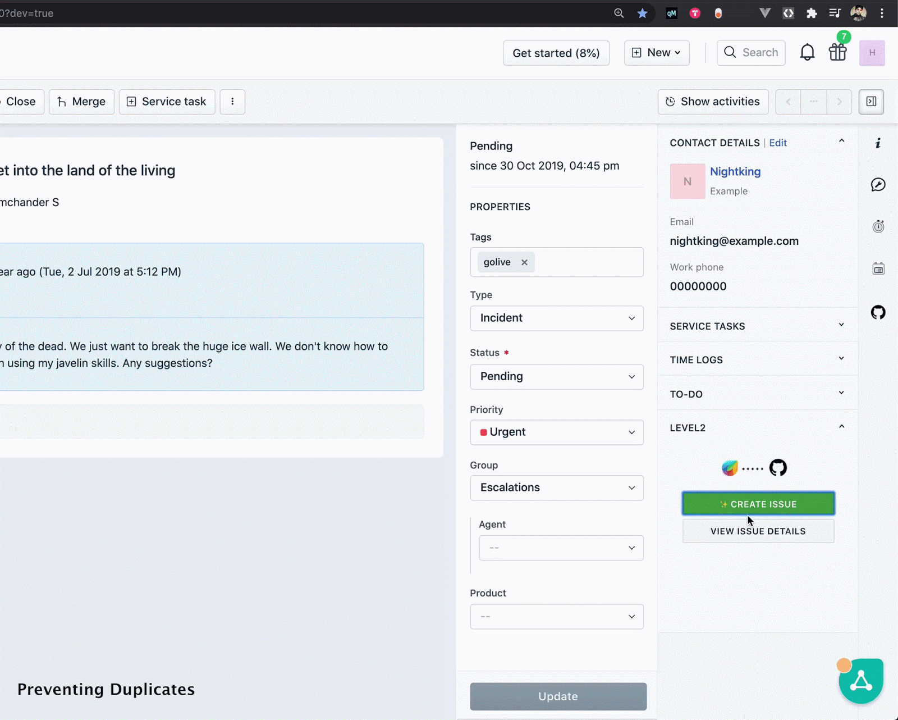
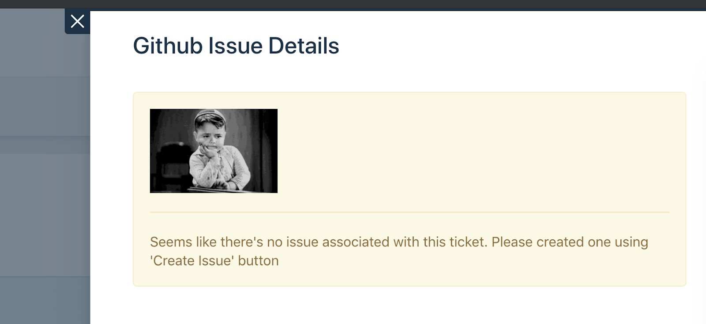

In this tutorial, we will create a simple app that integrates with GitHub and lets us create Github issues for Freshdesk tickets. Along the way, we will look into the frequently used platform-features such as Data Storage, Request methods, Notifications, OAuth, Installation Parameters, UI Modals/Dialogs, and so on. These features will come in handy when you create apps for the products.
⭐️What will we be learning?
How to,
- Make API calls from our app and secure them using OAuth
- Create a GitHub issue from Freshdesk using REST APIs
- Avoid duplication using Data Storage
- Display the issue on our app using Modals and Data storage methods
🏊♂️Before we dive-in, ensure to,
- Clone the marketplace sample apps repo and open the boilerplate code.
git clone https://github.com/freshworks/marketplace-sample-appscd marketplace-sample-apps/Play-Along/Exercises/fundamentals/level2/start- Set up a trial Freshdesk account
- Set up a GitHub account
Before proceeding to the next step,
- Obtain the
client_idandclient_secretof a sample Github app based on instructions in Codelab Step 5 (Configuring our app with Github OAuth) - Fill the obtained details in the
oauth_config.jsonfile
If you navigate to app/template.html, you'll notice that we have a simple UI built using Bootstrap v3.3 and the product (Freshdesk) stylesheet. The UI looks like the image below:

The Create Issue button enables us to create an issue and the View issue details button helps us to view the created issue. This is a simple sidebar app. However, there are other placeholders that you can explore in the documentation(Full page app, Background app, Caller Telephony Integration - CTI app,etc.) for respective products.
app/template.html
<html>
<head>
<script src="https://ajax.googleapis.com/ajax/libs/jquery/3.2.0/jquery.min.js"></script>
<script src="https://static.freshdev.io/fdk/2.0/assets/fresh_client.js"></script>
<script src="app.js"></script>
<link rel="stylesheet" type="text/css" href="https://static.freshdev.io/fdk/2.0/assets/freshdesk.css">
<link rel="stylesheet" type="text/css" href="style.css">
</head>
<body>
<div class="fw-widget-wrapper">
<div class="row col-xs-12 col-xs-offset-0">
<div class="banner">
<img src="./resources/img/banner.png" width="175px"/>
</div>
<button id="createIssue" type="button" class="btn btn-success btn-block mr-1">
<small>✨Create Issue</small>
</button>
<button id="viewIssue" class="btn btn-default btn-block mr-1">
<small>View Issue Details</small>
</button>
</div>
</div>
</body>
</html>REST APIs enable communication between the app and GitHub. This is the case for any third-party communication from the app. The GitHub API documentation clearly specifies how (endpoint, headers, payload, and so on) to make the API calls. Our app should adhere to the specification and provide payloads in the specified format.
To create an issue in GitHub, we must make an API call to the POST /repos/:owner/:repo/issues endpoint with the following payload attributes:
Attribute Name | Type | Description |
|
| Title of the issue. |
|
| Contents of the issue. |
|
| Milestone number to which the issue must be associated. Note: Only users with push access can set the milestone for new issues. Otherwise, the milestone is silently dropped. |
|
| Labels to associate with the issue. Note: Only users with push access can set labels for new issues. Otherwise, the Labels are silently dropped. |
|
| Logins for users who must be assigned to the issue. Note: Only users with push access can set assignees for new issues. Otherwise, assignees are silently dropped. |
Usually, in front-end apps, making secure API calls is a challenge. To secure API calls and to solve other issues such as CORS, we make use of the Request methods with secure iparams.
The following snippet shows the iparam definition in the config/iparams.json file:
{
"github_repo": {
"display_name": "Github Repo Name : ",
"description": "Enter the Github Repository name Ex: githubhandle/reponame",
"type": "text",
"required": true,
"secure": true
}
}Testing Installation Parameters:
You can provide test data for iparams by navigating to http://localhost:10001/custom_configs. In my case, I am filling-in the value of the Github repo. Upon success, you will see a notification at the top of the test iparams page - stating that the App Installation parameters have been successfully stored.

The Request method call from our app is as follows. Make a note of how we made use of iparam templating to substitute the repo name.
app/app.js
client.request.post(`https://api.github.com/repos/<%= iparam.github_repo %>/issues`, options)
.then(function (data) {
// TODO : Add try catch block
response = JSON.parse(data.response);
var ticketObj = { ticketID: ticketData.ticket.id, issueID: response.id, issueNumber: response.number };
setData(ticketObj);
})
.catch(function (error) {
console.error("error", error);
});Until now, we have seen the structure of the Request method and how it can be used with iparam templating to make a call. If we use basic authentication or keys, we can make similar use of iparams in setting the header values (in the options object of the Request methods - which we will see shortly). In our case, we want to secure the API calls using OAuth; let's see how it can be done with the Request method. Before that, let's cover the concept of OAuth in a breeze⚡️
Let's take a quick trip back in time to understand how OAuth was even born in the first place. In the early days of the internet, users were accustomed to providing their username and password to access resources. These resources could be email or social media profiles or even bank accounts, and so on. In case if somebody hacks or steals their credential, they will get direct and complete access to all the resources. There was no way to limit access or to revoke it in a proper way. Another issue is that if a third-party service wants to integrate, they would require password-based access. This opened a lot of anti-patterns and vulnerabilities. Also there were many technical challenges to this approach. if the user accidentally changes the password, the integration or anything dependent on that goes for a toss!
As the internet grew rapidly it became absolutely necessary to control the access & authorization in a proper way. We gradually started seeing advancements in mobile app, APIs and complex web applications. Although there was SAML it was primarily focused on authentication and is not authorization focused. So a group of smart people sat together and wrote a specification on how to implement access or authorization delegation. That is how OAuth came into existence

Open Authorization (OAuth) is an open standard for delegated authorization . OAuth is commonly used as a way for users to grant websites or applications access to information on other websites, without giving away the passwords. One can understand the flow of OAuth from the diagram below.
In this scenario, we are the Resource Owners. We own Resources (Github repos,issues). The browser is the user-agent. In order to access the resources, the Client (Freshworks app) initiates the flow (A) with client details and scope (permissions to resources). The Github Authorization server checks the client details and seeks approval from the Resource owner - flow (B). If the approval is granted, authorization code is passed back to Client (our app) - Flow (C). Our app securely exchanges the code for Access token and possibly Refresh token - flow (D & E)
With this access token, our app can obtain secure resources on our behalf - Flow (F). In all of this flow, the resource owner never shares credentials with the client. Only a token is passed. This token is similar to how we get access cards in hotels.
For more information on OAuth, refer to our documentation.
Let's proceed to create a GitHub app that would provide us the client_id and client_secret to enable OAuth in our app. When creating the app, ensure to provide the redirect URL for your app in the third-party developer portal (GitHub) with the following values:
- Local Testing:
http://localhost:10001/auth/callback - Production:
https://oauth.freshdev.io/auth/callback

After the app is created, obtain the client_id and client_secret values (Refer image below) and add them to the oauth_config.json file along with the authorization and token URLs. For more information, refer to the GitHub developer docs.

A sample oauth_config.json file is as follows:
config/oauth_config.json
{
"client_id": "5b5ablababalbalbalbalbalb1426c",
"client_secret": "d9e4633e2blabalbalbalbalbalbal33071399389081a",
"authorize_url": "https://github.com/login/oauth/authorize",
"token_url": "https://github.com/login/oauth/access_token",
"options": {
"scope": "repo"
},
"token_type": "account"
}After the preceding steps are run, it is time to modify the options parameter of the Request method call.
Note: access_token is not an iparam and is automatically substituted after authorization.
After the necessary configurations, run the app by using the fdk run command. The following message requesting for authorization is displayed.


After the app is approved, you will be redirected to the Create Issue page.
- To get started with creating an issue, we are going to make use of the
createIssue()function in app/app.js file
/**
* Create a Github Issue
*/
function createIssue() {
console.log("Proceeding to create issue from the ticket");
getTicketDetails(function (ticketData) {
checkAndCreateIssue(
ticketData.ticket.id,
function () {
// The record already exists - indicates it is already associated with Github issue
showNotification('warning', 'Hold on 🙅🏻♂️', 'A Github issue has been already created for this ticket. Click on \'View Issue Details\' button');
},
function (error) {
//404 - Indicates that the record is not found in the data storage
if (error.status === 404) {
createIssueHelper(ticketData);
}
})
}, function (error) {
console.error("Error occurred while fetching ticket details", error);
});
}- The logic for
createIssueHelper()function is as below. Copy and paste the following code at the appropriate place (Ignore if the code is already present)
/**
* Makes an API call to Github to create an issue from the ticket
* @param {object} ticketData Ticket data
*/
function createIssueHelper(ticketData) {
var options = {
headers: {
"Authorization": 'token <%= access_token %>',
"User-Agent": 'FreshHuddle Sample User Agent'
},
body: JSON.stringify({
"title": ticketData.ticket.subject,
"body": ticketData.ticket.description_text
}),
isOAuth: true
};
client.request.post(`https://api.github.com/repos/<%= iparam.github_repo %>/issues`, options)
.then(function (data) {
// TODO : Add try catch block
response = JSON.parse(data.response);
var ticketObj = { ticketID: ticketData.ticket.id, issueID: response.id, issueNumber: response.number };
showNotification('success', 'Yay 🎉', 'A Github issue is successfully created for this ticket')
// setData(ticketObj);
})
.catch(function (error) {
console.error("error", error);
})
}
Now that we are able to authenticate with GitHub, we will see how we can create an issue in GitHub.
The createIssueHelper() method lets us create an issue in GitHub, based on the ticket data. The following is a preview of how the results look. 
A corresponding GitHub issue is created in the repo that is specified in the iparams test page.

As evident from the title, we might run into a situation where we may create multiple issues by pressing the Create Issue button (more than once). To avoid duplicates, we can make use of the Data Storage feature in our app.
A simple approach is to maintain a record for a ticket, if an issue is successfully created. When the next issue is to be created, a check is run to verify if there's a record that already exists. If it exists, a new issue will not be created (potential duplicate).
Data storage allows us to achieve two things at the same time: avoids duplication and acts as a cache when fetching the issue details.
app/app.js
- Paste the following code in app.js right before the showNotification(type, title, message) to implement data storage
/**
* Store Github issue data using data storage API
* @param {array} data Issue array to be set in data storage
*/
function setData(data) {
var dbKey = String(`fdTicket:${data.ticketID}`).substr(0, 30);
var dbKey2 = String(`gitIssue:${data.issueNumber}`).substr(0, 30);
Promise.all([client.db.set(dbKey, { issue_data: data }), client.db.set(dbKey2, { issue_data: data })]).then(function () {
console.info('Mapping Data Saved');
}).catch(function (error) {
console.error("Unable to persist data : ", error);
});
}- Uncomment "setData(ticketObj);" in createIssueHelper(ticketData) function to store mapping data (Ignore if it's already there)
You can use the Interface methods to trigger user interface actions on a page. With these methods, an app can control the visibility of ticket properties, hide or disable buttons, and show dialog boxes and notifications.
For our app, we will make use of Modals to show the ticket details.
/**
* Function to View issue in the modal, Passes ticket as an object to the modal, can be fetched in the modal using Instance API
*/
function viewIssue() {
getTicketDetails(function (data) {
client.interface.trigger("showModal", {
title: "Github Issue Details",
template: "./modal/modal.html",
data: data.ticket
});
}, function (error) {
console.error(error);
});
}The modal.html file contains the ticket details. modal.js is the javascript file associated with it.
- From the modal.html file, obtain the Github issue number associated with a ticket.
- Using the Request method, make a GET call to GitHub.
- To display the ticket details, set the HTML content as follows:
/**
* Function to fetch issue from github, authorization is done using Oauth
* @param {string} issueID Issue number to query specific ticket from github
*/
function fetchIssue(issueID) {
var options = {
headers: {
'Authorization': 'token <%= access_token %>',
'User-Agent': 'FreshHuddle Sample User Agent'
},
isOAuth: true
};
client.request.get(`https://api.github.com/repos/<%= iparam.github_repo %>/issues/${issueID}`, options)
.then(function (data) {
try {
data = JSON.parse(data.response);
var html = '';
html = `<h3> Issue title : ${data.title} </h3>
<p>Description : ${data.body}</p>
<p> Issue Number : ${data.number}</p>
<p>Issue ID ; ${data.id}</p>
<p> Issue Status : ${data.state}</p>`;
$('#modal').append(html);
} catch (error) {
console.error("Error while attempting to show issue", error);
}
})
.catch(function (error) {
console.error("error", error);
});
}
If there's no issue associated with the ticket, the data storage method throws a 404 error status; we can display an appropriate message for the error.
/**
* Retrieve the issue from data storage
* @param {Number} ticketID Ticket ID
* @param {function} callback Callback function
*/
function getIssue(ticketID,callback) {
var dbKey = String(`fdTicket:${ticketID}`).substr(0, 30);
client.db.get(dbKey)
.then(callback)
.catch(function (error) {
//404 - Indicates that the record is not found in the data storage
if (error.status === 404) {
console.error("No issue found for ticket", error);
var html = '';
html = `<div class="alert alert-warning" role="alert">
<img src="https://media.tenor.com/images/a48310348e788561dc238b6db1451264/tenor.gif" width="120px"/>
<hr>
Seems like there's no issue associated with this ticket. Please create one using 'Create Issue' button
</div>`;
$('#modal').append(html);
}
})
}
We learned to
- Create and configure an OAuth client
- Made secure API requests using Request methods and OAuth,
- Remembered state information using data storage,
- Displayed notifications from the app and
- Passed-on context from the main instance of an app to a modal launched by the app.
What's next ?

Serverless technique,before it got mainstream - Feat. Wimpy, Popeye